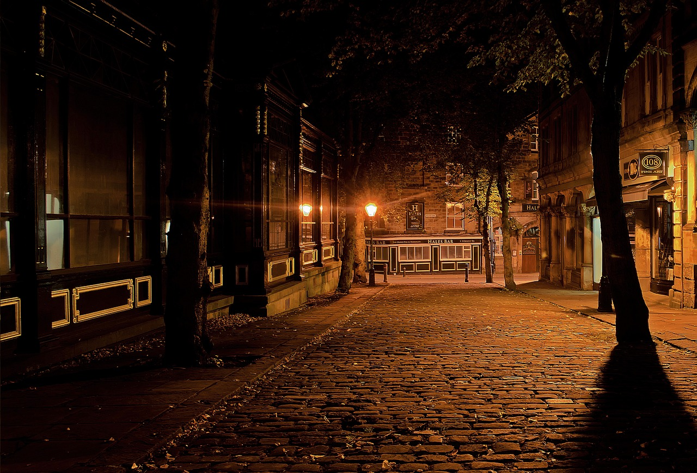

Foto de HilarioPhotography PÁGINA
Foto de HilarioPhotography PÁGINA
Foto de Elisa Gil Gasset PÁGINA
Foto de jossuetrejo_oficial PÁGINA

Foto de PublicDomainPictures PAGINA
 Foto de PublicDomainPictures PAGINA
Foto de PublicDomainPictures PAGINA
| General |
Tamaño Medio |
Formato |
Tiempo de Carga |
| Imagenes |
578 KB |
JPG, JPEG |
4.9 segundos |
| Imagenes 2º pagina |
221 KB |
WEBP |
1.6 segundos |